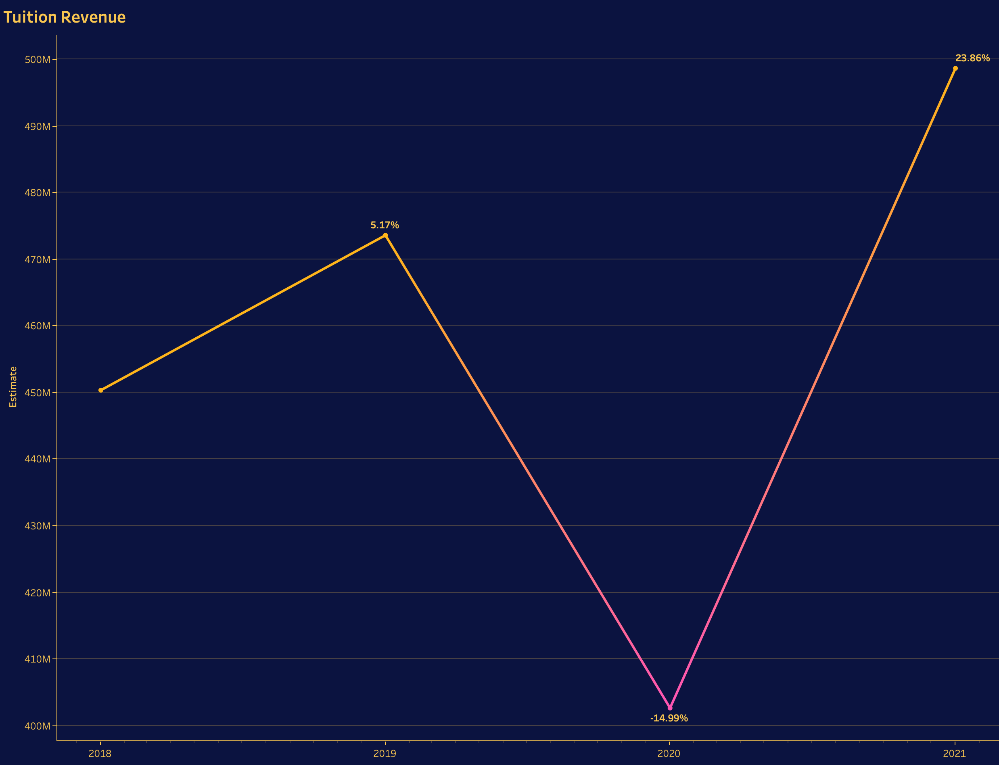
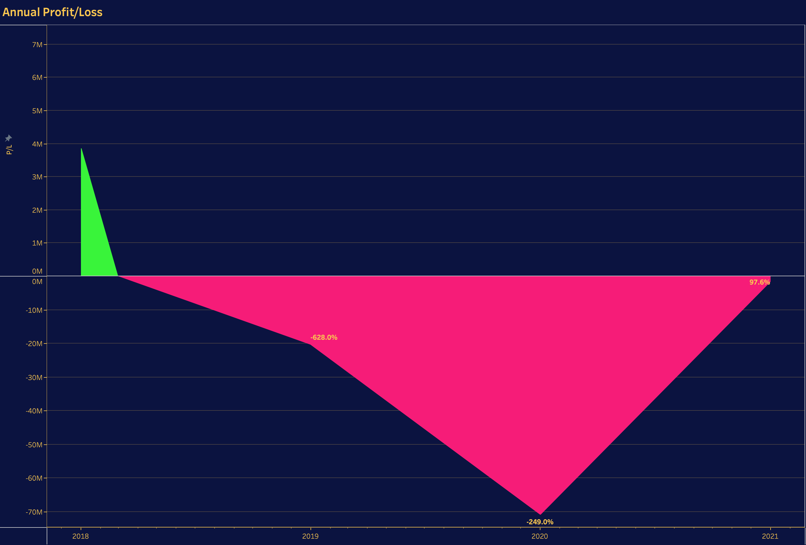
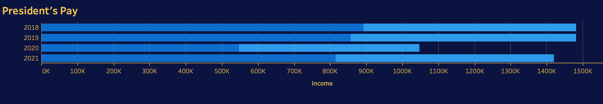
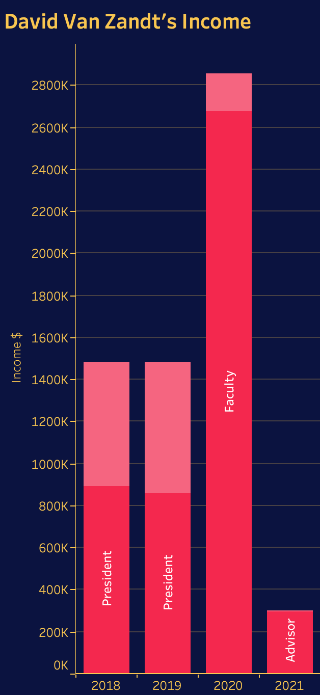

The New School, a prestigious university located in the heart of New York City, has long been celebrated for its progressive educational approach and commitment to social change. However, recent financial troubles and concerns about executive compensation have cast a shadow over the institution. In this article, we will delve into how mismanagement by the university has led to significant financial losses and examine the controversy surrounding the president's compensation and their ability to lead.
The New School is known for its diverse range of programs and its commitment to providing a unique and progressive educational experience. With a diverse student body and a variety of innovative courses, it has long been a preferred choice for many. The university's tuition fees reflect the high cost of education in a city like New York, which is a primary source of its revenue, roughly $500m per year is generated from tuition.


Over the past few years, The New School has experienced a decline in student enrollment. The increased competition among universities in New York City and evolving student preferences have contributed to this trend. The resulting drop in student numbers has impacted the university's financial health. Mismanagement of finances has been a significant factor in The New School's financial struggles. Reports indicate that the university has been inefficient in managing its funds, leading to unnecessary waste and budget deficits. The university's investment decisions have also been called into question. Certain investments have yielded losses, further straining the institution's financial position.
The cost of operating in New York City, including faculty salaries and overhead expenses, has also increased, adding pressure to the university's financial situation.

The President's salary is significantly higher than those of presidents at peer institutions. Some have questioned whether such a high salary is warranted given the university's financial difficulties. Critics argue that the university's board has not held President McBride accountable for the institution's financial troubles. Instead, President McBride has continued to receive substantial compensation packages, including bonuses and benefits.
Faculty and staff members have expressed their concerns over the disparity between the president's compensation and the financial struggles faced by the university. They argue that this sends the wrong message and is demoralizing for those working tirelessly to provide quality education.

David Van Zandt served as the president of The New School from 2011 until his departure in 2020. His departure marked the end of his official role as the university's leader, but it was just the beginning of a lucrative post-presidential career within the institution.
In 2020, David Van Zandt, despite no longer holding the presidential position, received a staggering $2.8 million from The New School. This included a significant faculty salary, despite his limited teaching responsibilities. Even in 2021, Van Zandt was retained by the university as an advisor, for which he received an additional $300,000. It is worth noting that Van Zandt's new role, post-presidency, remained relatively unclear.
The university's budget is under significant strain, with tuition revenue issues and financial mismanagement. Continuing to pay such substantial sums to Van Zandt only exacerbates the financial challenges. The New School's reputation as a progressive and socially conscious institution is at risk. The controversy surrounding Van Zandt's compensation creates the impression of a lack of accountability and transparency within the university.
The departure of President Dwight McBride in 2022, just two years after his arrival, has added yet another layer of complexity to the ongoing controversy at The New School. Coupled with the substantial income he received during his brief tenure, this situation has intensified the frustration and disappointment felt by students, faculty, and parents within the institution.
The students, who had hoped for stability and vision under President McBride's leadership, now find themselves grappling with a sense of uncertainty and change once again. The swift departure of the university's leader, combined with his substantial income, has raised questions about the institution's ability to provide a consistent, quality educational experience. Faculty members, who invested their time and expertise in supporting President McBride's vision, face challenges in adapting to a new leadership transition and the potential shift in institutional priorities. The significant income received by the former president during his short tenure has only exacerbated the faculty's concerns about equitable compensation within the university.
Parents, who entrust their children's education and financial resources to The New School, are confronted with yet another abrupt leadership change and financial instability. This situation may lead to further skepticism about the university's commitment to financial transparency and responsible governance.